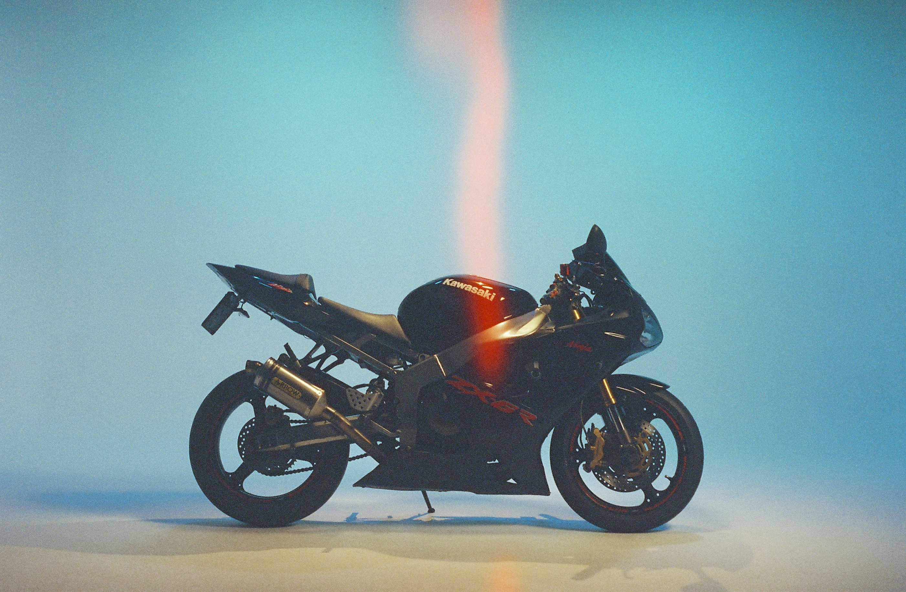
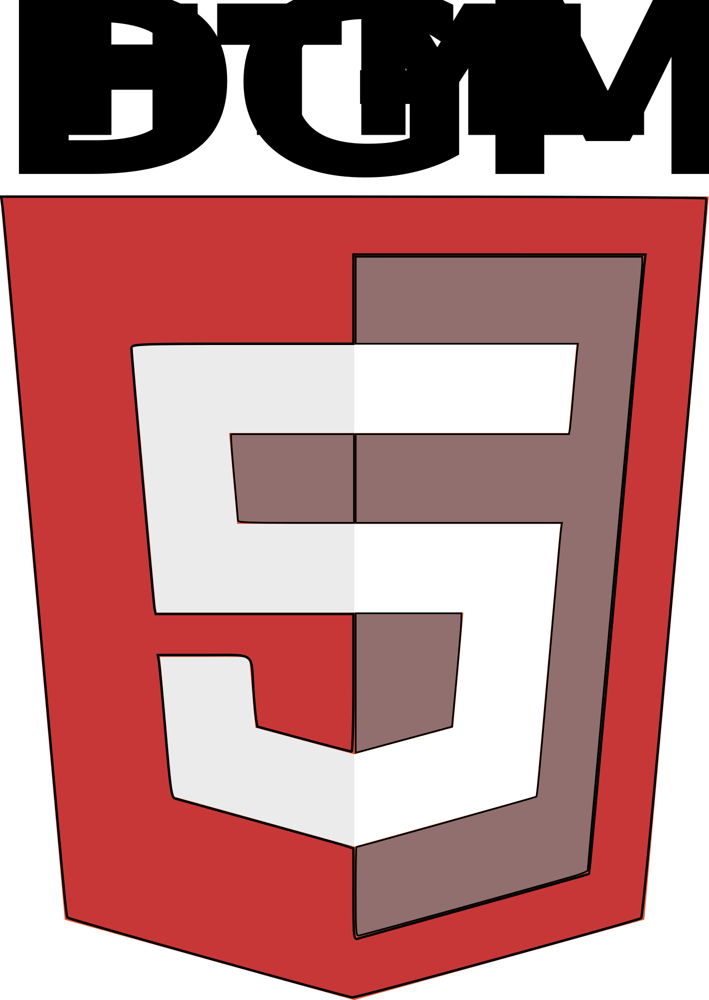
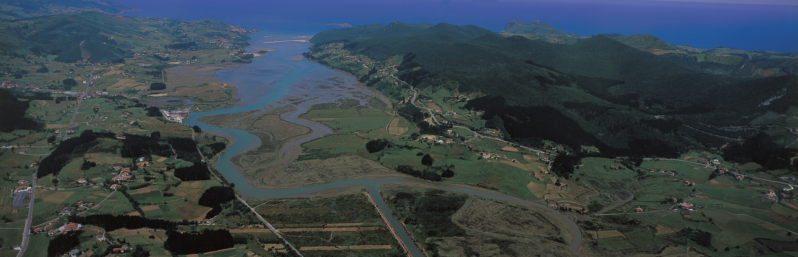
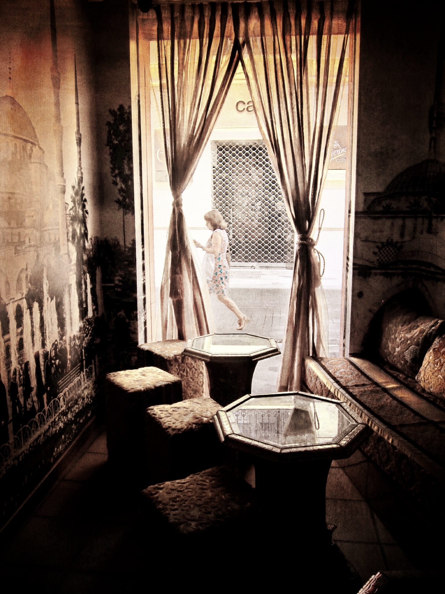
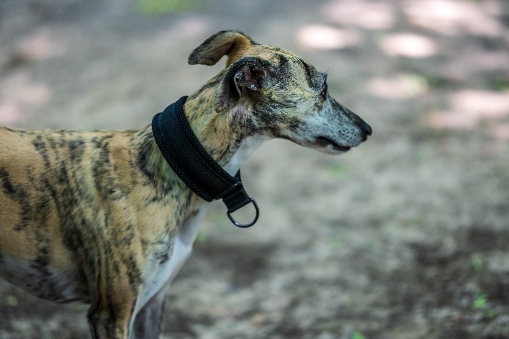
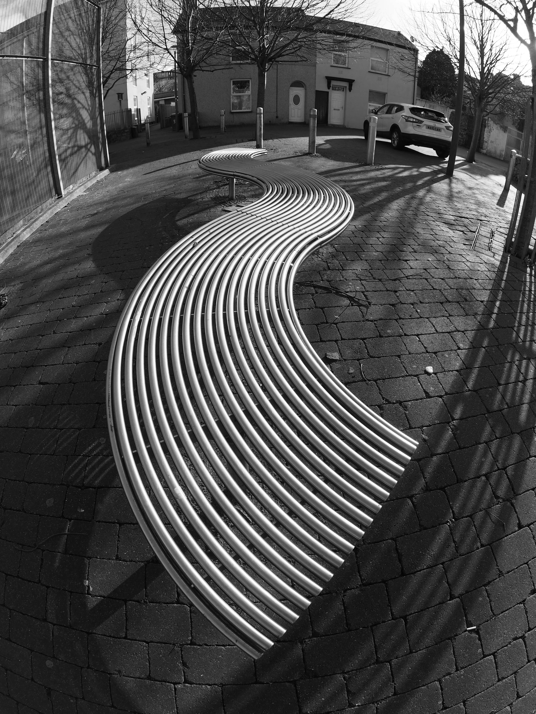

Actividad 1 – Escalar
En esta actividad se genera una imagen original y siete versiones con distintos tamaños, resoluciones y formatos. Para la edición se ha utilizado GIMP. Imagen original obtenida de: Unsplash

2804px – 300ppp – JPG
1920px – 72ppp – JPG

800px – 300ppp – JPG
800px – 72ppp – WEBP

400px – 300ppp – JPG

400px – 72ppp – AVIF
200px – 300ppp – JPG

200px – 72ppp – AVIF
Actividad 2 – Banner
Banner animado de 5 imágenes. La animación se repite infinitamente y fue creada usando GIMP. Dar click en las imagenes para ver URL.


Actividad 4 – Inkscape
Cambiar de color y texto a una imagen.

Actividad 5 – Logo mas ligero
Transforman una imagen para conseguir la version mas ligera.
Actividad 6 – Maoa
Crear una zona clickeable(NO SE COMO HACER PARA QUE QUEDE MEJOR)

Actividad 8 – Licencias de imágenes
Licencia
Miniatura
Autor
URL
Dominio público

Quan-You Zhang
CC BY

Nick Kenrick
CC BY-NC

Heiner Engbrocks
CC BY-ND

Robert Brands
CC BY-SA

Chris